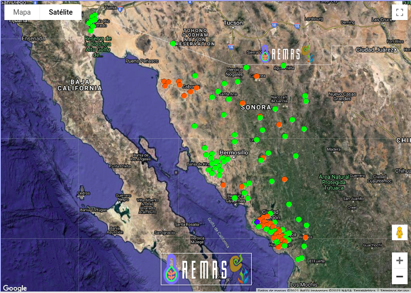
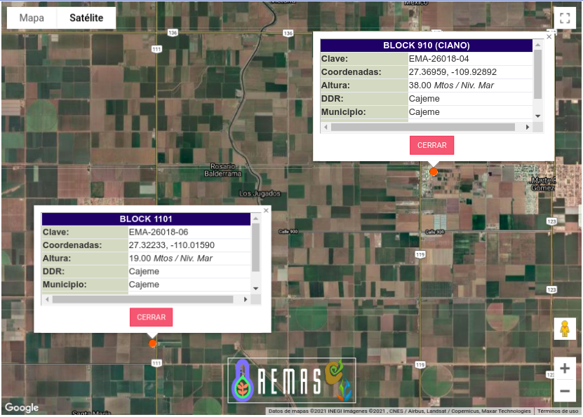
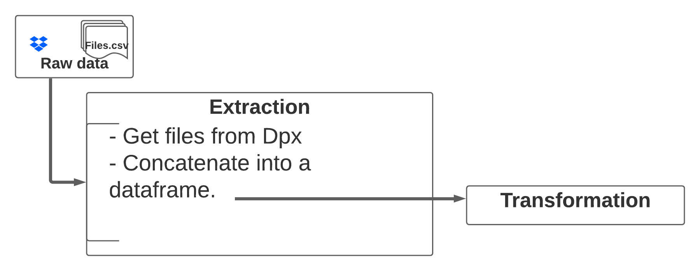
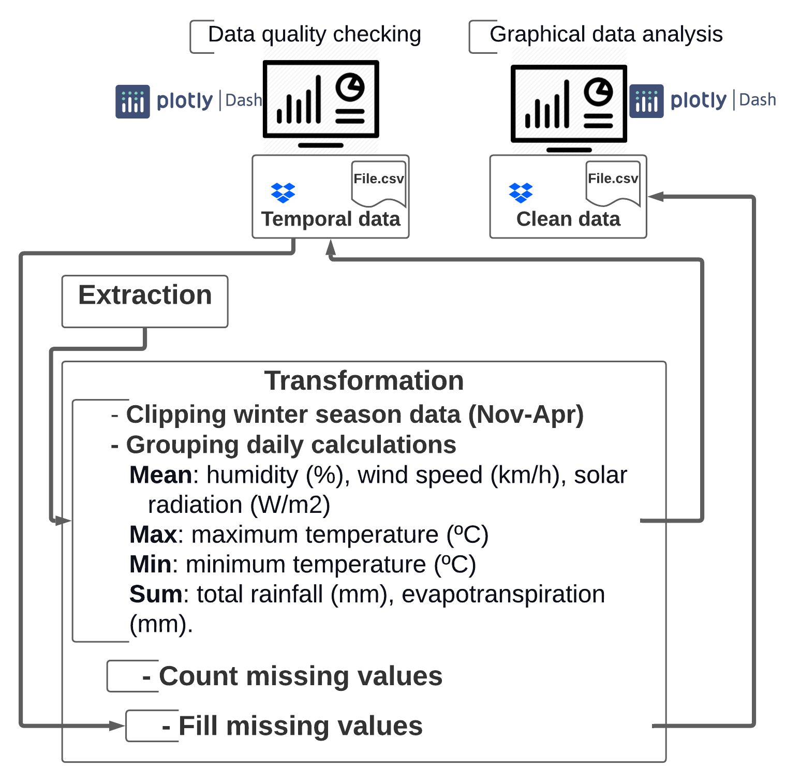

Data flow for testing remote-sensed data in crop simulations with the view to increase general availability and accessibility of inputs to crop models and boost scale-out
April 30, 2021
Advisors
Dr. Davide Cammarano, Purdue University
Dr. Diane R. Wang, Purdue University
Dr. Matthew Reynolds, Global Wheat Program, CIMMYT
Project description


Data input
Weather data: site weather data for the duration of the growing season
Soil data: soil surface characteristics and soil profile data
Management and experimental data: crop management from the experiment
The experiment
Consultative Group on International Agriculture Research


The experiment

Population of contrasting genotypes grown in plots under three different environments: optimal, water stressed and heat stressed conditions.
-
Autumn-Winter 2021-2022
-
Autumn-Winter 2022-2023
Source data

Automatic weather station

Weather Data
Comma-separated values (CSV) files, recorded with a one-hour frequency, 8650 observations
-
Maximum and minimum air temperature (ºC)
-
Solar radiation (W/m2)
-
Total rainfall (mm)
-
Humidity (%)
-
Wind speed (km/h)
-
Evapotranspiration (mm)
-
Atmospheric pressure
-
Wind direction
Methodology

Extraction process

Transformation process
